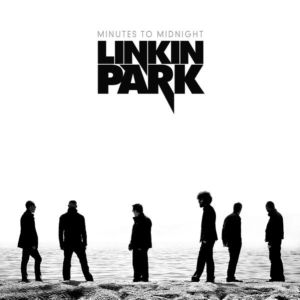

Ao longo de anos de consolidação no topo das paradas, a identidade sonora inconfundível do grupo sempre foi impulsionada pela sinergia e pelo contraste perfeito entre os rimes marcantes e a produção criativa de Mike Shinoda com a amplitude vocal devastadora e emocional de Chester Bennington. Faixas lendárias como "In the End", "Numb", "Crawling" e "What I've Done" tornaram-se verdadeiros hinos geracionais que traduziam sentimentos complexos de angústia, isolamento, resiliência e superação, criando um laço indissolúvel e uma conexão íntima com milhões de ouvintes. Recusando-se a ficar acomodado em uma fórmula pronta, o Linkin Park desafiou constantemente as expectativas do público e da crítica, evoluindo e explorando novas sonoridades a cada projeto lançado na discografia.
Após um doloroso período de hiato em decorrência da trágica e inestimável perda de Chester Bennington em 2017, a banda escreveu um capítulo histórico de renascimento ao anunciar seu retorno definitivo em 2024. A nova fase trouxe uma energia renovada ao integrar a talentosa Emily Armstrong nos vocais principais e Colin Brittain no comando da bateria. O aclamado lançamento do álbum From Zero, impulsionado pelo sucesso avassalador de singles globais como "The Emptiness Machine" e "Heavy Is the Crown", reafirmou com autoridade que o legado do Linkin Park permanece mais vibrante do que nunca, provando sua capacidade inigualável de se reinventar, inspirar novas gerações e lotar arenas pelo mundo todo.
